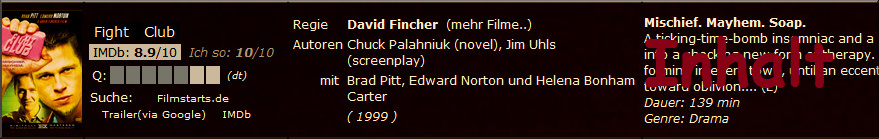

| Infos |

Ein Klick auf ein Genre listet alle zu dem Genre gehörenden Filme auf. Klickt man auf den Namen eines Films, wird die dazugehörige IMDb-SEITE aufgerufen. Ein Klick auf einen Teil der Filmcrew (Regisseur, Autor oder Schauspieler) führt zu weiterführenden Infos. Mit (mehr Filme..) werden alle Filme eines Regisseurs aufgelistet. Für eine DEUTSCHE INHALTSANGABE nutzt den Link zur Filmstarts.de-Seite. Klickt man auf die IMDb-Wertung eines Films, werden sämtliche Filme nach absteigendem IMDb-Ranking dargestellt. 'Q' gibt die QUALITÄT des Films wieder. Sechs stehen dabei für 720p und sieben Sterne für 1080p. |
||||||||||||||||
| Listen
aller Filme |
3 mögliche Ansichten...
|
||||||||||||||||
| > Dringliche Filmvorschläge | |||||||||||||||||
| > Filmvorschläge | |||||||||||||||||
| Ideen Must see |
nach Genre: | ||||||||||||||||
| > eXplotainment | |||||||||||||||||
| > Thriller | Horror | |||||||||||||||||
| > Dokutainment | |||||||||||||||||
| > Fame.ily | |||||||||||||||||
| Benutzte APIs / libs: |
|||||||||||||||||
| Beautifulsoup pIMDB IMDb Api xGoogle |